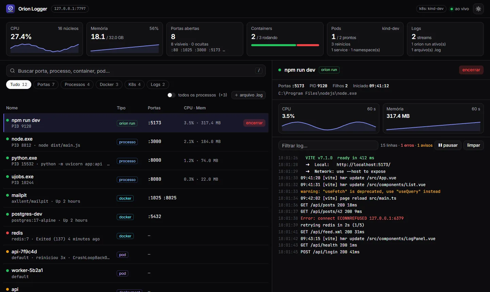
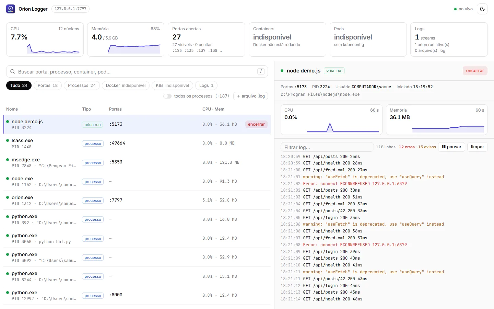
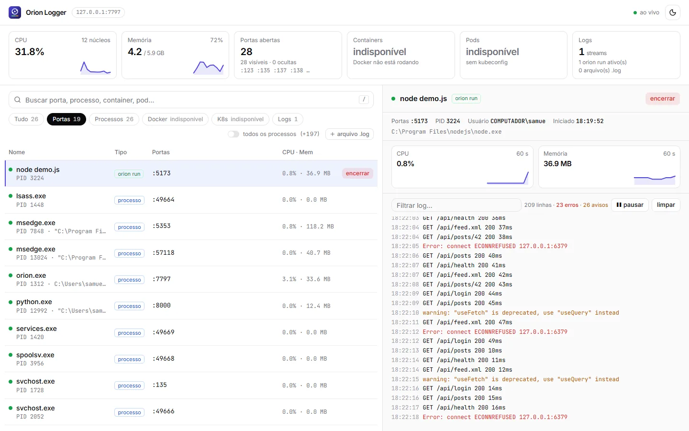
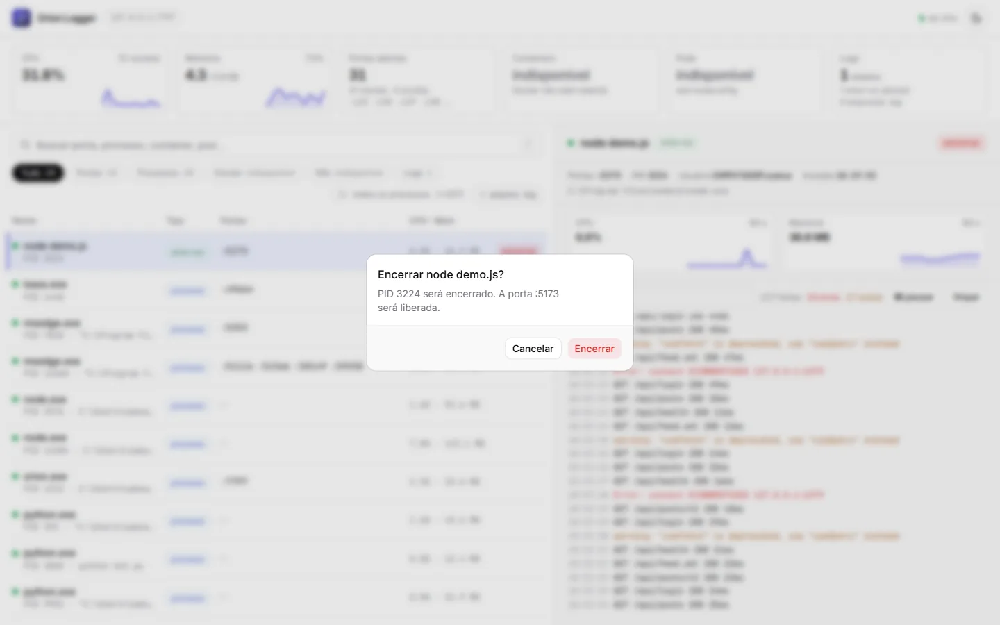

Orion Logger
Raio-X da máquina de desenvolvimento: portas, processos, containers Docker e pods do Kubernetes com logs ao vivo, numa tela e num único .exe.An X-ray of your dev machine: ports, processes, Docker containers and Kubernetes pods with live logs, on one screen in a single .exe.


 0
0

O que fazWhat it does
- Lista única com portas, processos, containers Docker e pods, services e deployments do Kubernetes, atualizada a cada 2 segundos.
- One list with ports, processes, Docker containers and Kubernetes pods, services and deployments, refreshed every 2 seconds.
- Busca enquanto digita por porta, nome, imagem, namespace ou PID (
/foca a busca), e filtros por tipo. - Search as you type by port, name, image, namespace or PID (
/focuses search), plus filters by type. - Logs ao vivo de containers, pods, comandos iniciados com
orion rune qualquer arquivo.log, com filtro, pausar e limpar. - Live logs from containers, pods, commands started with
orion runand any.logfile, with filter, pause and clear. - Ações com confirmação: encerrar a árvore de um processo, iniciar, parar e reiniciar container, apagar pod.
- Confirmed actions: kill a process tree, start, stop and restart a container, delete a pod.
- CPU e memória da máquina e do item selecionado, com gráfico dos últimos 60 segundos.
- CPU and memory for the machine and the selected item, with a 60-second chart.
- Sem Docker ou sem
kubeconfig, o filtro mostra "indisponível" e o resto continua funcionando. Tema claro e escuro. - Without Docker or a
kubeconfig, that filter shows "unavailable" and the rest keeps working. Light and dark theme.
Como funcionaHow it works
Um servidor Go com Gin junta processos e portas (gopsutil), o Docker (Engine API pelo named pipe) e o Kubernetes (client-go) a cada 2 segundos e manda tudo por SSE para a interface em Vue 3, Tailwind e shadcn-vue, embutida no .exe. O orion run roda o seu comando como se fosse direto no terminal e manda a saída para o painel de logs.A Go server with Gin gathers processes and ports (gopsutil), Docker (Engine API over the named pipe) and Kubernetes (client-go) every 2 seconds and streams it all over SSE to the Vue 3, Tailwind and shadcn-vue interface embedded in the .exe. orion run runs your command as if straight in the terminal and sends its output to the log panel.
127.0.0.1, toda requisição exige um token aleatório e Host e Origin são verificados. Antes de encerrar um processo, o Orion confere pelo horário de criação se o PID ainda é o mesmo.Everything local. The panel only listens on 127.0.0.1, every request needs a random token and Host and Origin are checked. Before killing a process, Orion checks its creation time so a reused PID is never hit.Como usarUse it
.\orion.exe .\orion.exe --port 8000 --no-browser .\orion.exe run npm run dev
ImagensImages


